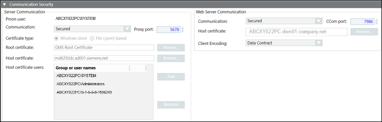
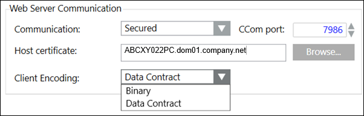
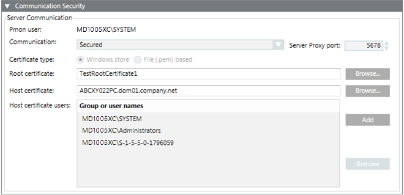
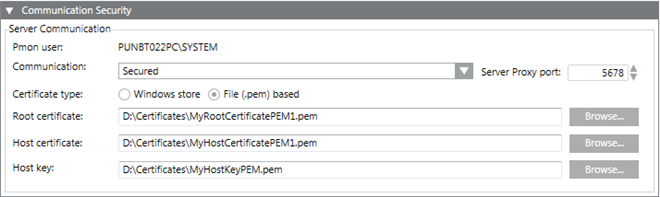

Communication Security Expander
The Communication Security expander allows you to configure the proxy port for secured Client/Server communication. It also allows you to configure security settings for Client/Server communication and Web communication by use of certificates.
For securing the Client/Server communication you can use either file (.pem) based certificates or certificates from the Windows store. The file (.pem) based certificates must be available on the disk (.pem). The Windows store certificates must be imported into the appropriate Windows certificate store.
For securing the Web Server communication over the CCom port, only certificates available in the Windows store can be used.
On a Server SMC
On a Server SMC, when you edit a project you can configure the security settings for Client/Server communication using the Server Communication section. In addition, you can modify the Web Server communication settings and the CCom port number.

Communication Security Expander - Server Communication Section
The Project Settings section of the Communication Security expander allows you to configure the details of the project, including the type of Communication, the Server Proxy port number, and Windows store or File (.pem) based certificates for root and host.
|
Project Settings Section | |
Item | Description |
Process monitor (Pmon) user | Displays the Pmon user configured for the current project. If you change the System account user after project creation, there is an inconsistency between the System account user and the Pmon user and causing the Pmon user to display in red. To synch, you must stop the project, edit and save it. |
Communication | Allows you to secure the communication between the Server project and the Client connected to that project. It provides the following Client/Server communication types: |
Server Proxy port | This is enabled only when you set the communication type as secured. |
Certificate type | This is enabled only when you select communication type as secured. The default certificate type is Windows store. You can change this and select the option file (.pem) based. |
Root certificate | This is enabled only when you set the Client/Server communication type as Secured. By default, it displays the root certificate that you set as default. |
Host certificate | This is enabled only when you set the communication type as secured. By default, it displays the host certificate that you set as default. |
Host certificate users | This field is available only when you set the communication type as securedand the certificate type selected is Windows store. |
Host key | This is enabled only when you set the communication type as secured and the certificate type as file (.pem) based. Allows you to browse for the host key certificate from the disk. This field is only available for File (.pem) based certificates. |
Communication Security Expander – Web Server Communication
The Web Server Communication group in the Communication Security expander allows you to configure secure web communication between Server project and IIS (typically remote web server) that takes place over the CCom port. The communication is secured using host certificate.
For securing the communication between Server and the local web server, you can leave the web server communication as local (without certificates).
You can configure the web server communication during project creation and modification on Server, Client/FEP installations.

NOTE:
With Version 5.0, the Unsecured communication type is replaced with Local. It is recommended to configure the communication of all remote web applications to Secured as Unsecured communication will not work.

|
Communication Security Expander | |
Item | Description |
Communication | Allows you to secure the communication between the Server and web server (IIS) by configuring the CCom port and the host certificate. The web server (IIS) may be installed on the same computer as the Server (as a local web server) or it may be installed on a separate computer (acting as a remote web server). |
CCom port | (Available only on Server SMC) Default port number is 8000 and the support range is 1 through 65535. The CCom port is used by the CCom manager of a project to communicate with web server (IIS), which is required for working with Windows App client. |
Host certificate | This field is enabled only when you select Secured from the Web communication drop-down list. By default, it displays the host certificate that you have set as default. However, you can browse and select another host or self-signed certificate using the Select Certificate dialog box. |
Client Encoding | With Web Server Communication mode as Secured/Local, the Client Encoding (Data Contract/ Binary) becomes available in the Web Server Communication. In the Client Encoding drop-down list, by default, Data Contract is displayed. |
On a Client/FEP SMC in Automatic Mode
When you edit a project on a Client/FEP SMC, the Communication Security expander allows you to configure security details setting Server Communication to Automatic configuration or Manual configuration.
In automatic mode, once you select the Server and the Server project, the appropriate security settings for that project are automatically set. For example, if you select an unsecured or stand-alone Server project the all the fields of the Communication Security expander are disabled.
If you select a secured Server project, the certificate type is set to match that of the Server project. For example, if you select a secured Server project that has secured communication using Windows store certificates, the certificate type is automatically set to Windows store during the Client/FEP project creation/modification. Note that, for the Windows store certificate type, you must add the host certificate users, who can launch the Desigo CC Client on the Client/FEP station.

On a Client/FEP SMC in Manual Mode
When you edit the Client/FEP project in the Manual configuration mode, you must manually enter the same server communication details for the selected Server project.

NOTE1:
When modifying a project on a Client/FEP, if you select a Server project with Secured Client/Server communication, you must provide the same root certificate configured for Client/Server communication in the selected Server project. The host certificate can be different; but it must be created using the root certificate provided on Client/FEP. Otherwise, the Desigo CC Client application does not launch.
NOTE 2:
The host certificate is used by the Desigo CC Client/FEP. Therefore, the Client/FEP logged-in operating system user must be given access to the private key of the host certificate stored in the Windows Certificate store.
NOTE 3: On Server/Client stations, for Windows store certificate type, only certificates with RSA signature algorithm are supported. CNG certificates are not supported.